Linear Regression
Introduction
We now consider a model of the form:
- \(m_{100} = \beta_0 + \beta_1 \cdot m_{200} + \epsilon\)
- \(\epsilon \sim \mathcal{N}\left(0,\, \sigma^2\right)\)
We load the libraries, the data and set the variables.
library(kknn)(record <- read.table(file = "../data/record.txt", header = TRUE))response <- record[, "m100"]
regressor <- record[, "m200"]We make a first plot.
plot(regressor, response, asp = 1)
grid()
abline(0, 1, lty = 3)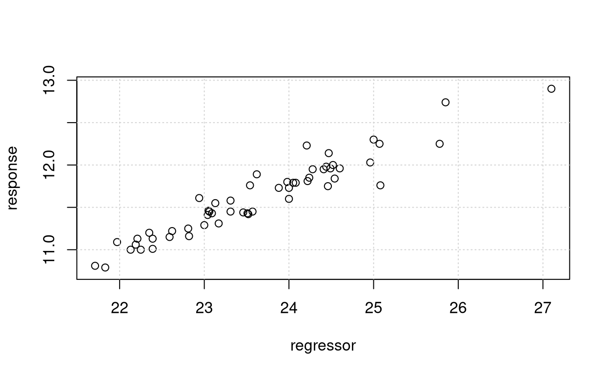
Linear Model
We fit a linear model.
fm <- lm(response ~ regressor)
print(summary(fm))##
## Call:
## lm(formula = response ~ regressor)
##
## Residuals:
## Min 1Q Median 3Q Max
## -0.41633 -0.08976 -0.00059 0.06876 0.39105
##
## Coefficients:
## Estimate Std. Error t value Pr(>|t|)
## (Intercept) 2.45047 0.40175 6.10 1.26e-07 ***
## regressor 0.38779 0.01697 22.84 < 2e-16 ***
## ---
## Signif. codes: 0 '***' 0.001 '**' 0.01 '*' 0.05 '.' 0.1 ' ' 1
##
## Residual standard error: 0.1386 on 53 degrees of freedom
## Multiple R-squared: 0.9078, Adjusted R-squared: 0.9061
## F-statistic: 521.9 on 1 and 53 DF, p-value: < 2.2e-16We plot the results.
plot(regressor, response, asp = 1)
grid()
abline(0, 1, lty = 3)
abline(coefficients(fm), col = "red")
points(regressor, fitted(fm), col = "red", pch = 16)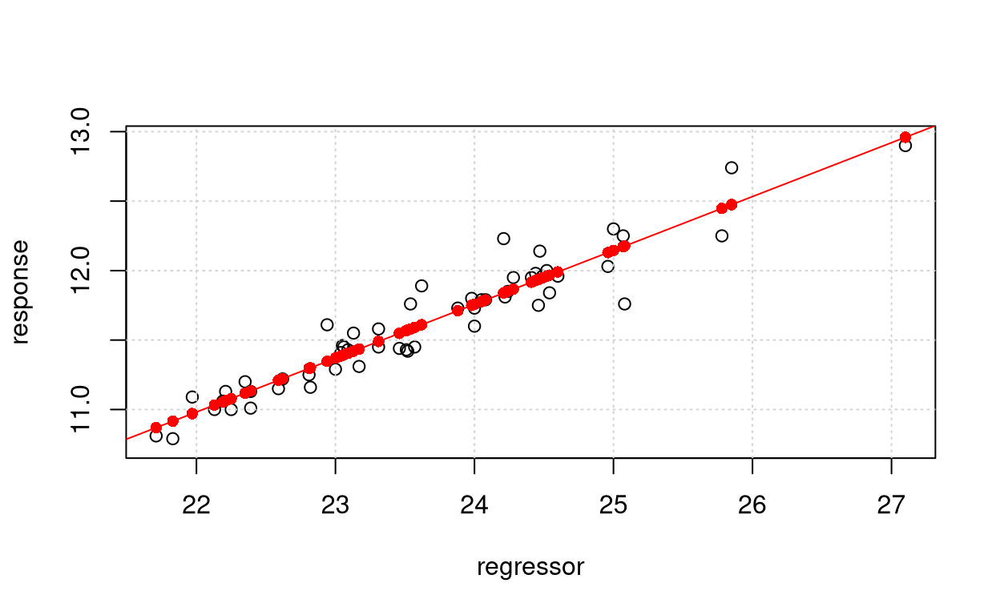
Diagnostics and Analysis
We create a qq-plot of the residuals,
qqnorm(residuals(fm))
perform a Normality test of the residuals,
shapiro.test(residuals(fm))##
## Shapiro-Wilk normality test
##
## data: residuals(fm)
## W = 0.96742, p-value = 0.1408print the estimates of the regression coefficients,
coefficients(fm)## (Intercept) regressor
## 2.4504719 0.3877935compute CI of the regression coefficients,
confint(fm, level = 0.95)## 2.5 % 97.5 %
## (Intercept) 1.6446695 3.2562743
## regressor 0.3537464 0.4218407print the estimate of the error variance
s2 <- sum(residuals(fm)^2) / fm$df
sqrt(s2)## [1] 0.1385923plot the residuals vs regressor
plot(regressor, residuals(fm))
abline(h = 0)
Prediction
Compute a CI for the mean \(m_{100}\) record of countries that have \(m_{200}\) record equal to 23.
Firstly, we build a new data base,
(Z0 <- data.frame(regressor = 23))then we compute the CI
(CI <- predict(fm, Z0, interval = "confidence"))## fit lwr upr
## 1 11.36972 11.32634 11.41311and finally the PI.
(PI <- predict(fm, Z0, interval = "prediction", level = 0.95))## fit lwr upr
## 1 11.36972 11.08838 11.65107Grid Prediction
We build a new data base,
(Z0 <- data.frame(cbind(regressor = seq(21, 28, by = 0.1))))we compute the CIs and plot them.
(CI <- predict(fm, Z0, interval = "confidence"))## fit lwr upr
## 1 10.59414 10.49670 10.69157
## 2 10.63292 10.53861 10.72722
## 3 10.67169 10.58050 10.76289
## 4 10.71047 10.62238 10.79857
## 5 10.74925 10.66422 10.83428
## 6 10.78803 10.70605 10.87002
## 7 10.82681 10.74784 10.90579
## 8 10.86559 10.78960 10.94159
## 9 10.90437 10.83132 10.97742
## 10 10.94315 10.87300 11.01330
## 11 10.98193 10.91463 11.04923
## 12 11.02071 10.95621 11.08521
## 13 11.05949 10.99773 11.12125
## 14 11.09827 11.03918 11.15736
## 15 11.13705 11.08055 11.19355
## 16 11.17583 11.12183 11.22982
## 17 11.21461 11.16300 11.26621
## 18 11.25338 11.20406 11.30271
## 19 11.29216 11.24498 11.33935
## 20 11.33094 11.28575 11.37614
## 21 11.36972 11.32634 11.41311
## 22 11.40850 11.36673 11.45028
## 23 11.44728 11.40690 11.48767
## 24 11.48606 11.44681 11.52531
## 25 11.52484 11.48647 11.56322
## 26 11.56362 11.52583 11.60141
## 27 11.60240 11.56489 11.63991
## 28 11.64118 11.60364 11.67871
## 29 11.67996 11.64209 11.71783
## 30 11.71874 11.68024 11.75724
## 31 11.75752 11.71810 11.79694
## 32 11.79630 11.75569 11.83690
## 33 11.83508 11.79305 11.87710
## 34 11.87385 11.83018 11.91753
## 35 11.91263 11.86712 11.95815
## 36 11.95141 11.90388 11.99894
## 37 11.99019 11.94050 12.03989
## 38 12.02897 11.97698 12.08097
## 39 12.06775 12.01334 12.12216
## 40 12.10653 12.04960 12.16346
## 41 12.14531 12.08578 12.20484
## 42 12.18409 12.12188 12.24630
## 43 12.22287 12.15791 12.28783
## 44 12.26165 12.19388 12.32942
## 45 12.30043 12.22979 12.37106
## 46 12.33921 12.26567 12.41275
## 47 12.37799 12.30150 12.45448
## 48 12.41677 12.33729 12.49624
## 49 12.45554 12.37305 12.53804
## 50 12.49432 12.40878 12.57986
## 51 12.53310 12.44449 12.62172
## 52 12.57188 12.48017 12.66359
## 53 12.61066 12.51583 12.70549
## 54 12.64944 12.55148 12.74741
## 55 12.68822 12.58710 12.78934
## 56 12.72700 12.62271 12.83129
## 57 12.76578 12.65831 12.87325
## 58 12.80456 12.69389 12.91523
## 59 12.84334 12.72946 12.95722
## 60 12.88212 12.76502 12.99922
## 61 12.92090 12.80057 13.04123
## 62 12.95968 12.83611 13.08325
## 63 12.99846 12.87164 13.12527
## 64 13.03724 12.90716 13.16731
## 65 13.07601 12.94268 13.20935
## 66 13.11479 12.97818 13.25140
## 67 13.15357 13.01369 13.29346
## 68 13.19235 13.04918 13.33552
## 69 13.23113 13.08467 13.37759
## 70 13.26991 13.12016 13.41966
## 71 13.30869 13.15564 13.46174plot(regressor, response, asp = 1)
lines(Z0[, 1], CI[, "fit"])
lines(Z0[, 1], CI[, "lwr"], lty = 4)
lines(Z0[, 1], CI[, "upr"], lty = 4)Finally, we compute the PIs and plot them.
PI <- predict(fm, Z0, interval = "prediction", level = 0.95)plot(regressor, response, asp = 1)
lines(Z0[, 1], CI[, "fit"])
lines(Z0[, 1], CI[, "lwr"], lty = 4)
lines(Z0[, 1], CI[, "upr"], lty = 4)
lines(Z0[, 1], PI[, "fit"])
lines(Z0[, 1], PI[, "lwr"], lty = 2)
lines(Z0[, 1], PI[, "upr"], lty = 2)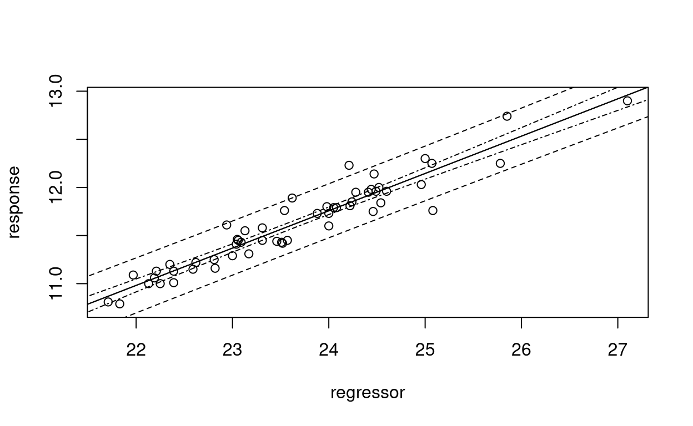
Multiple Regression
Introduction
We add all the disciplines.
We plot the data,
pairs(record)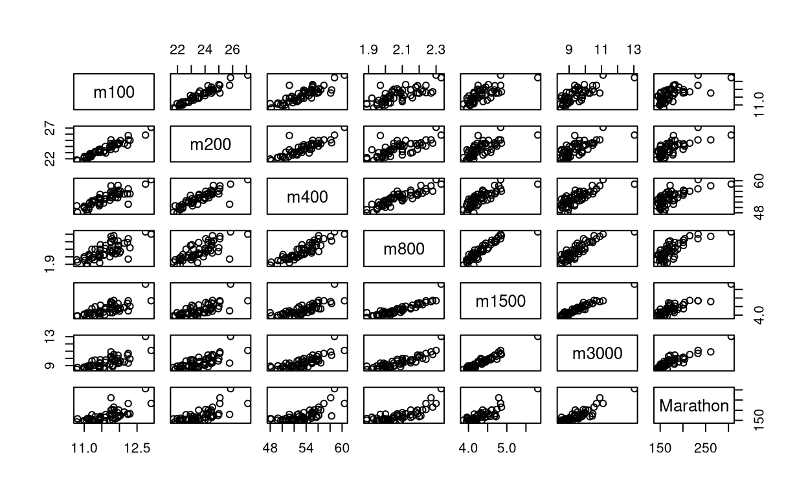
then we fit the linear model.
fmall <- lm(m100 ~ ., record)
print(summary(fmall))##
## Call:
## lm(formula = m100 ~ ., data = record)
##
## Residuals:
## Min 1Q Median 3Q Max
## -0.37757 -0.08563 0.00137 0.07379 0.30377
##
## Coefficients:
## Estimate Std. Error t value Pr(>|t|)
## (Intercept) 2.477301 0.545402 4.542 3.76e-05 ***
## m200 0.357755 0.035710 10.018 2.38e-13 ***
## m400 0.001479 0.022841 0.065 0.949
## m800 -0.293170 0.610635 -0.480 0.633
## m1500 0.119841 0.274866 0.436 0.665
## m3000 0.105933 0.102481 1.034 0.306
## Marathon -0.001767 0.001426 -1.239 0.221
## ---
## Signif. codes: 0 '***' 0.001 '**' 0.01 '*' 0.05 '.' 0.1 ' ' 1
##
## Residual standard error: 0.136 on 48 degrees of freedom
## Multiple R-squared: 0.9195, Adjusted R-squared: 0.9095
## F-statistic: 91.43 on 6 and 48 DF, p-value: < 2.2e-16Comparison
Compare the models!
print(summary(fm))##
## Call:
## lm(formula = response ~ regressor)
##
## Residuals:
## Min 1Q Median 3Q Max
## -0.41633 -0.08976 -0.00059 0.06876 0.39105
##
## Coefficients:
## Estimate Std. Error t value Pr(>|t|)
## (Intercept) 2.45047 0.40175 6.10 1.26e-07 ***
## regressor 0.38779 0.01697 22.84 < 2e-16 ***
## ---
## Signif. codes: 0 '***' 0.001 '**' 0.01 '*' 0.05 '.' 0.1 ' ' 1
##
## Residual standard error: 0.1386 on 53 degrees of freedom
## Multiple R-squared: 0.9078, Adjusted R-squared: 0.9061
## F-statistic: 521.9 on 1 and 53 DF, p-value: < 2.2e-16print(summary(fmall))##
## Call:
## lm(formula = m100 ~ ., data = record)
##
## Residuals:
## Min 1Q Median 3Q Max
## -0.37757 -0.08563 0.00137 0.07379 0.30377
##
## Coefficients:
## Estimate Std. Error t value Pr(>|t|)
## (Intercept) 2.477301 0.545402 4.542 3.76e-05 ***
## m200 0.357755 0.035710 10.018 2.38e-13 ***
## m400 0.001479 0.022841 0.065 0.949
## m800 -0.293170 0.610635 -0.480 0.633
## m1500 0.119841 0.274866 0.436 0.665
## m3000 0.105933 0.102481 1.034 0.306
## Marathon -0.001767 0.001426 -1.239 0.221
## ---
## Signif. codes: 0 '***' 0.001 '**' 0.01 '*' 0.05 '.' 0.1 ' ' 1
##
## Residual standard error: 0.136 on 48 degrees of freedom
## Multiple R-squared: 0.9195, Adjusted R-squared: 0.9095
## F-statistic: 91.43 on 6 and 48 DF, p-value: < 2.2e-16More models
We fit the linear model, but we remove the \(m_{200}\) record from the regressors.
fm2red <- lm(m100 ~ ., record[, -2])
print(summary(fm2red))##
## Call:
## lm(formula = m100 ~ ., data = record[, -2])
##
## Residuals:
## Min 1Q Median 3Q Max
## -0.55807 -0.15245 -0.02501 0.11583 0.76341
##
## Coefficients:
## Estimate Std. Error t value Pr(>|t|)
## (Intercept) 5.341565 0.808209 6.609 2.68e-08 ***
## m400 0.161912 0.028341 5.713 6.46e-07 ***
## m800 -2.374492 0.999180 -2.376 0.0214 *
## m1500 0.293519 0.477342 0.615 0.5415
## m3000 0.117292 0.178316 0.658 0.5138
## Marathon 0.001053 0.002433 0.433 0.6669
## ---
## Signif. codes: 0 '***' 0.001 '**' 0.01 '*' 0.05 '.' 0.1 ' ' 1
##
## Residual standard error: 0.2367 on 49 degrees of freedom
## Multiple R-squared: 0.7513, Adjusted R-squared: 0.7259
## F-statistic: 29.61 on 5 and 49 DF, p-value: 1.019e-13We also fit a linear model to predict another discipline record.
fmallother <- lm(Marathon ~ ., record)
print(summary(fmallother))##
## Call:
## lm(formula = Marathon ~ ., data = record)
##
## Residuals:
## Min 1Q Median 3Q Max
## -36.839 -6.649 -0.027 5.534 33.973
##
## Coefficients:
## Estimate Std. Error t value Pr(>|t|)
## (Intercept) -129.104 62.250 -2.074 0.04347 *
## m100 -17.539 14.157 -1.239 0.22141
## m200 11.064 6.048 1.829 0.07356 .
## m400 -1.741 2.262 -0.770 0.44529
## m800 7.388 60.978 0.121 0.90406
## m1500 11.565 27.390 0.422 0.67475
## m3000 28.808 9.449 3.049 0.00373 **
## ---
## Signif. codes: 0 '***' 0.001 '**' 0.01 '*' 0.05 '.' 0.1 ' ' 1
##
## Residual standard error: 13.56 on 48 degrees of freedom
## Multiple R-squared: 0.8236, Adjusted R-squared: 0.8016
## F-statistic: 37.35 on 6 and 48 DF, p-value: < 2.2e-16k-Nearest Neighbours
Setting
We plot the data,
pairs(record)set the variables,
response <- record[, "m100"]
regressor <- record[, "m200"]plot them and att the linear regression lines for comparison.
plot(regressor, response)
grid()
abline(0, 1, lty = 3)
fm <- lm(response ~ regressor)
abline(coefficients(fm), col = "red")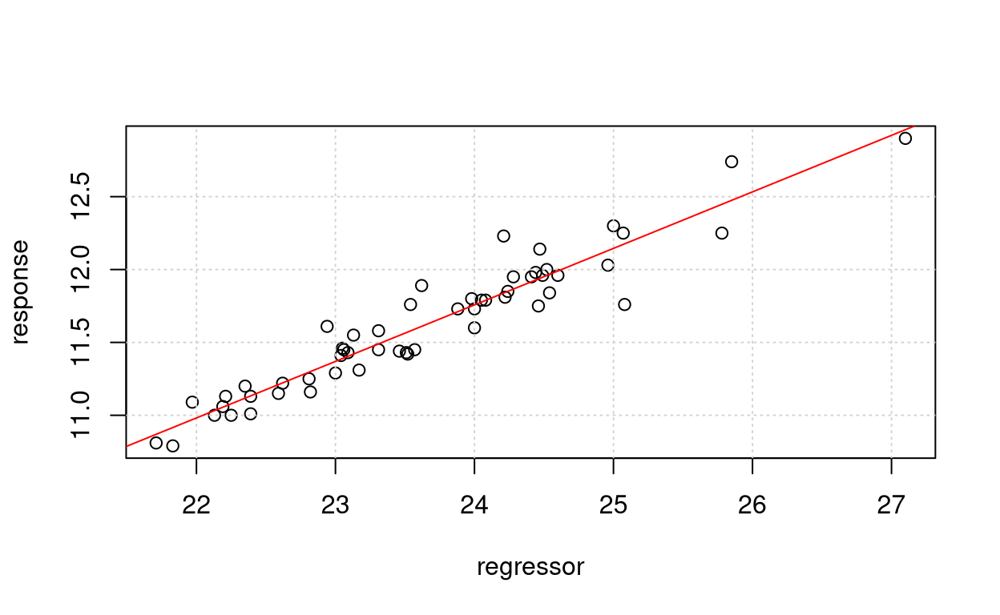
Computing the model
Z0 <- data.frame(cbind(regressor = seq(min(regressor), max(regressor), length = 100)))
predicted.response <- kknn(response ~ regressor,
train = data.frame(regressor, response),
test = Z0,
k = 15, kernel = "rectangular"
)We plot the knn prediction line.
plot(regressor, response)
grid()
abline(0, 1, lty = 3)
fm <- lm(response ~ regressor)
abline(coefficients(fm), col = "red")
lines(Z0[, "regressor"], predicted.response$fitted.values, col = "blue")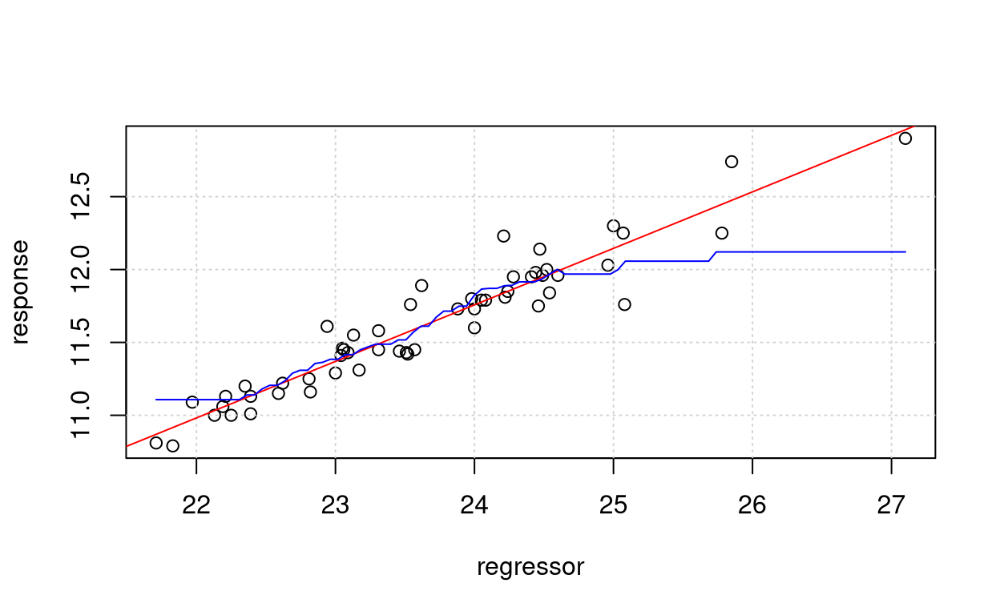
Tuning
To select the value of \(k\), we rely on LOO cross-validation
train.cv <- train.kknn(response ~ regressor,
data = data.frame(regressor, response),
kmax = 40, scale = F, kernel = "rectangular"
)We compare the CV errors with the responce variance.
plot(train.cv)
abline(h = var(response))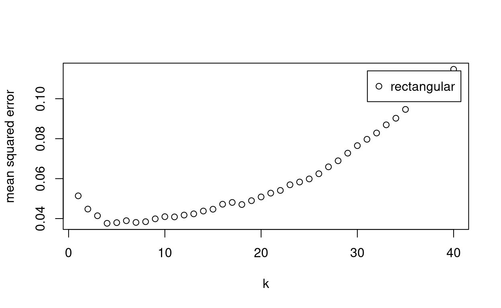
Exercise
Try to change regressor and compare the results!Prediction of the CAD/EUR exchange rate from the USD/EUR exchange rate
We import the data and set the variables.
exchange <- read.table(file = "../data/cambi-CAD-USD.txt", header = TRUE)
response <- exchange[, "CAD"]
regressor <- exchange[, "USD"]We plot the data.
plot(regressor, response, asp = 1)
grid()
abline(0, 1, lty = 3)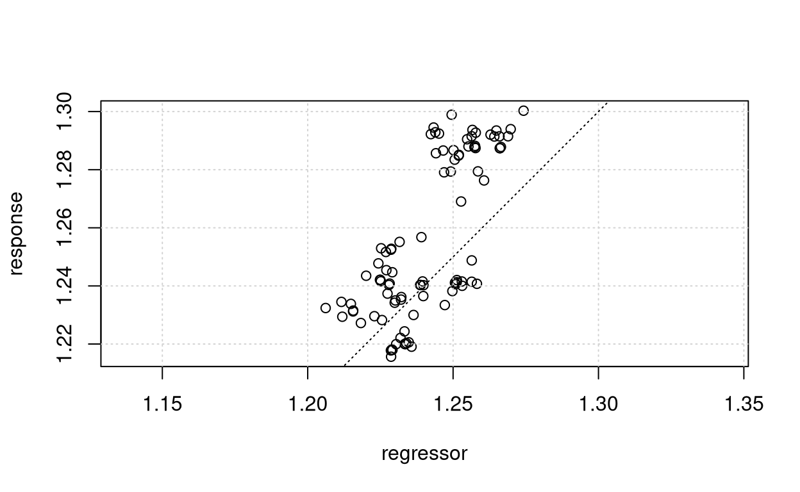
Fit LM and diagnostics
Fit a linear model
fm <- lm(response ~ regressor)
summary(fm)##
## Call:
## lm(formula = response ~ regressor)
##
## Residuals:
## Min 1Q Median 3Q Max
## -0.035526 -0.019415 0.002945 0.014023 0.036900
##
## Coefficients:
## Estimate Std. Error t value Pr(>|t|)
## (Intercept) -0.2983 0.1547 -1.928 0.057 .
## regressor 1.2514 0.1246 10.043 2.32e-16 ***
## ---
## Signif. codes: 0 '***' 0.001 '**' 0.01 '*' 0.05 '.' 0.1 ' ' 1
##
## Residual standard error: 0.01871 on 90 degrees of freedom
## Multiple R-squared: 0.5285, Adjusted R-squared: 0.5232
## F-statistic: 100.9 on 1 and 90 DF, p-value: 2.325e-16Plot the regression line and the fitted vaues
plot(regressor, response, asp = 1)
grid()
abline(0, 1, lty = 3)
abline(coefficients(fm), col = "red")
points(regressor, fitted(fm), col = "red", pch = 16)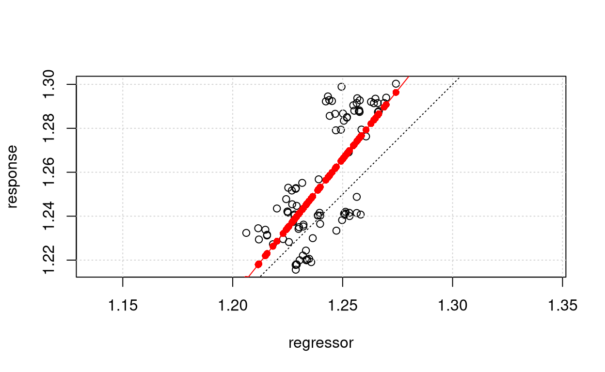
Create a qq-plot of the residuals
qqnorm(residuals(fm))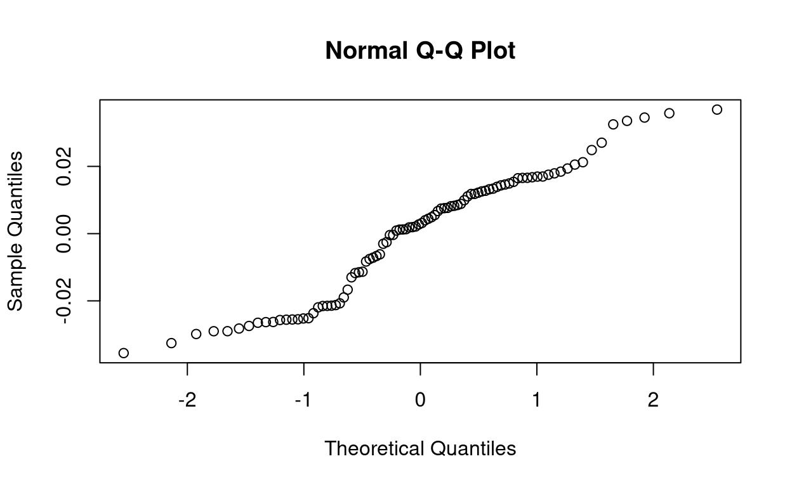
Perform a Normality test of the residuals
shapiro.test(residuals(fm))##
## Shapiro-Wilk normality test
##
## data: residuals(fm)
## W = 0.9494, p-value = 0.001333Compute CI of the regression coefficients
confint(fm, level = 0.95)## 2.5 % 97.5 %
## (Intercept) -0.6056074 0.009063448
## regressor 1.0038645 1.498962513Print the estimate of the error variance
s2 <- sum(residuals(fm)^2) / fm$df
sqrt(s2)## [1] 0.0187062Plot the residuals vs regressor
plot(regressor, residuals(fm))
abline(h = 0)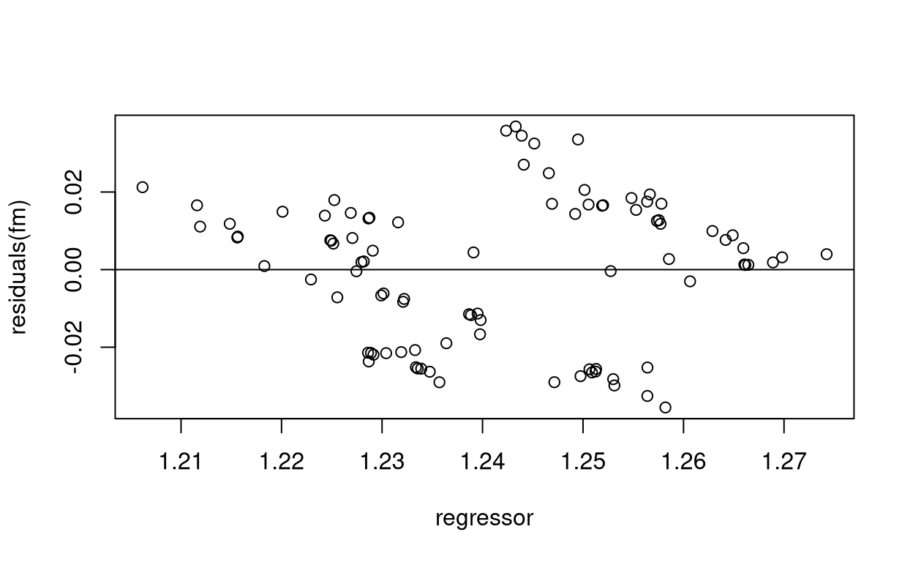
Switch to Logs
We switch to daily log returns
logreturn.CAD <- log(exchange[-1, "CAD"] / exchange[-length(exchange[, "CAD"]), "CAD"])
logreturn.USD <- log(exchange[-1, "USD"] / exchange[-length(exchange[, "USD"]), "USD"])
response <- logreturn.CAD
regressor <- logreturn.USDWe plot the data,
plot(regressor, response, asp = 1)
grid()
abline(0, 1, lty = 3)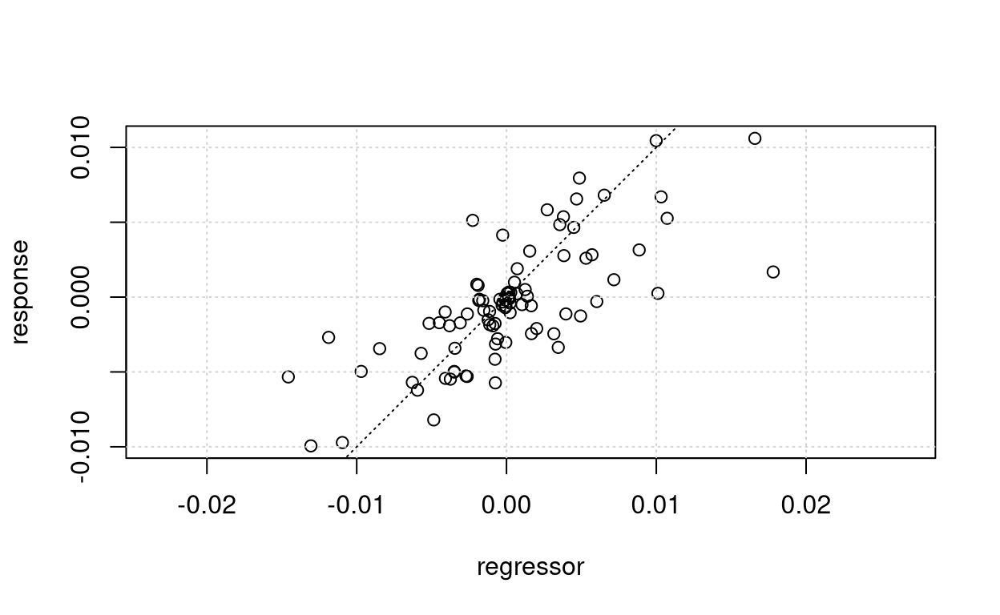 fit a linear model,
fmlog <- lm(response ~ regressor)
summary(fmlog)##
## Call:
## lm(formula = response ~ regressor)
##
## Residuals:
## Min 1Q Median 3Q Max
## -0.007221 -0.002159 0.000335 0.001286 0.006855
##
## Coefficients:
## Estimate Std. Error t value Pr(>|t|)
## (Intercept) -0.0005357 0.0002784 -1.924 0.0576 .
## regressor 0.5298923 0.0518097 10.228 <2e-16 ***
## ---
## Signif. codes: 0 '***' 0.001 '**' 0.01 '*' 0.05 '.' 0.1 ' ' 1
##
## Residual standard error: 0.002655 on 89 degrees of freedom
## Multiple R-squared: 0.5403, Adjusted R-squared: 0.5351
## F-statistic: 104.6 on 1 and 89 DF, p-value: < 2.2e-16plot the regression line and the fitted values,
plot(regressor, response, asp = 1)
grid()
abline(0, 1, lty = 3)
abline(coefficients(fmlog), col = "red")
points(regressor, fitted(fmlog), col = "red", pch = 16)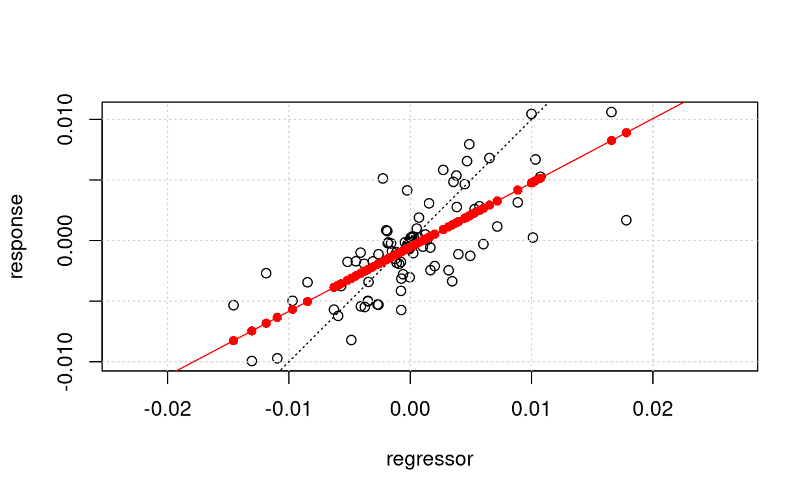 create a qq-plot of the residuals,
qqnorm(residuals(fmlog))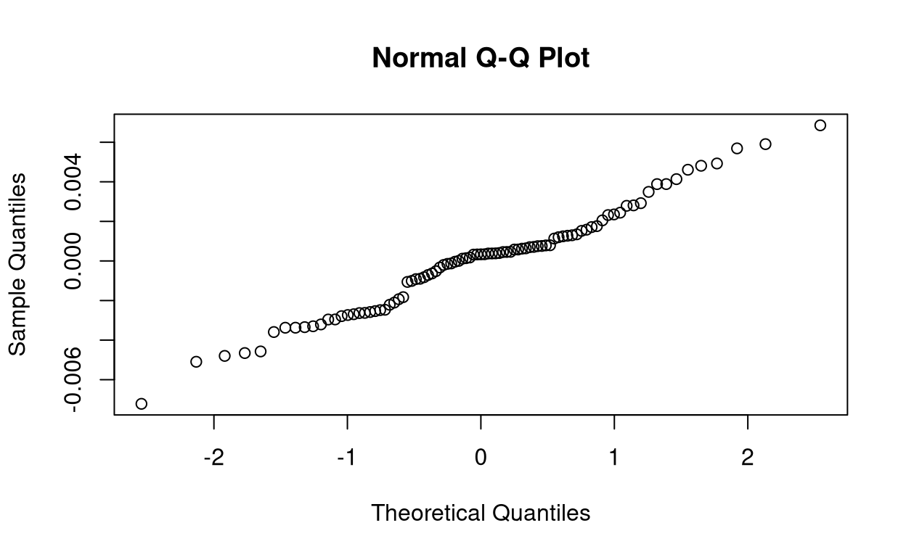 perform a Normality test of the residuals,
shapiro.test(residuals(fmlog))##
## Shapiro-Wilk normality test
##
## data: residuals(fmlog)
## W = 0.98185, p-value = 0.2361compute the CI of the regression coefficients,
confint(fmlog, level = 0.95)## 2.5 % 97.5 %
## (Intercept) -0.001088906 0.0000175887
## regressor 0.426947501 0.6328370986print the estimate of the error variance,
s2 <- sum(residuals(fmlog)^2) / fm$df
sqrt(s2)## [1] 0.002640533plot the residuals vs regressor.
plot(regressor, residuals(fmlog))
abline(h = 0)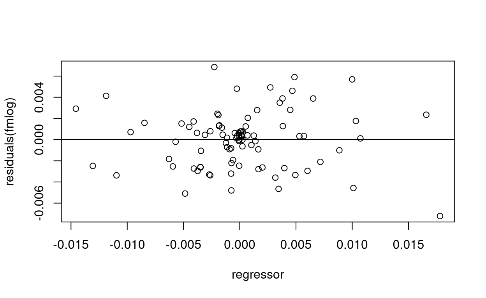
Compare predictions
We compare the results and plot the outcome.
CAD <- exchange[-1, "CAD"]
USD <- exchange[-1, "USD"]
logreturn.CAD <- log(exchange[-1, "CAD"] / exchange[-length(exchange[, "CAD"]), "CAD"])
logreturn.USD <- log(exchange[-1, "USD"] / exchange[-length(exchange[, "USD"]), "USD"])
CADfit <- fitted(fm)[-1]
CADfitlog <- exchange[-length(CAD), "CAD"] * exp(fitted(fmlog))plot(USD, CAD)
points(USD, CADfit, pch = 16, col = "red")
points(USD, CADfitlog, pch = 16, col = "green")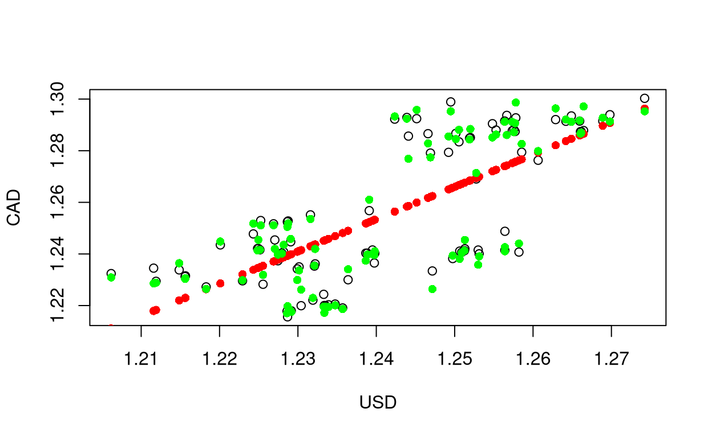
boxplot(cbind(CAD - CADfit, CAD - CADfitlog), main = "Prediction errors")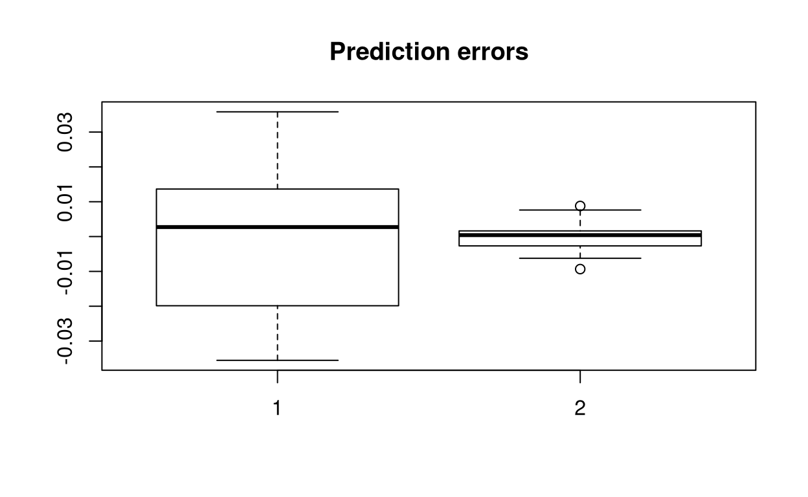
k-Nearest Neighbours
Setting
We set the variables, plot the data and add the linear regression line as a comparison.
response <- CAD
regressor <- USDplot(regressor, response)
grid()
abline(0, 1, lty = 3)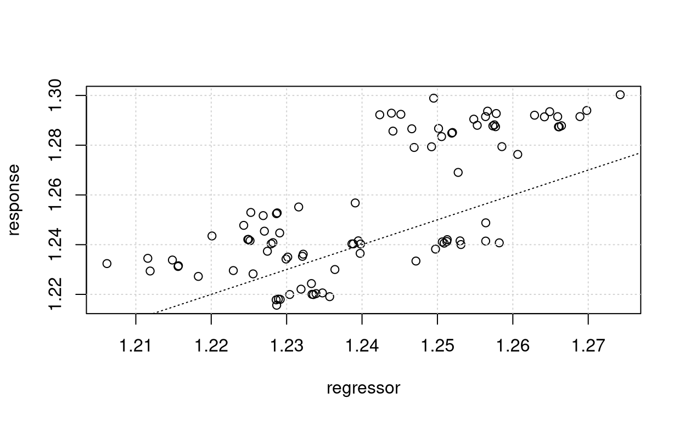
plot(regressor, response)
grid()
abline(0, 1, lty = 3)
fm <- lm(response ~ regressor)
abline(coefficients(fm), col = "red")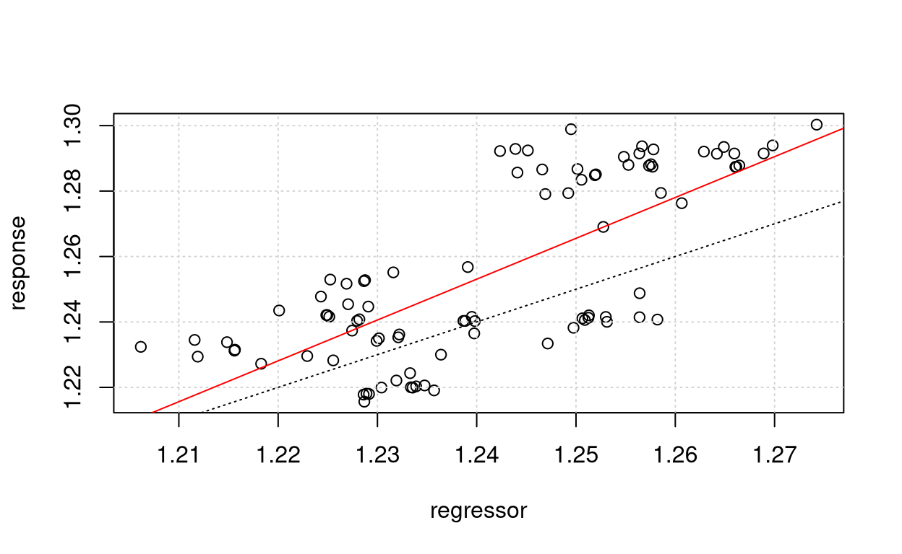
Fitting
We fit
Z0 <- data.frame(cbind(regressor = seq(min(regressor), max(regressor), length = 100)))
predicted.response <- kknn(response ~ regressor,
train = data.frame(regressor, response),
test = Z0,
k = 16, kernel = "rectangular"
)and plot.
plot(regressor, response)
grid()
abline(0, 1, lty = 3)
fm <- lm(response ~ regressor)
abline(coefficients(fm), col = "red")
lines(Z0[, "regressor"], predicted.response$fitted.values, col = "blue")
Tuning
We set \(k\) via LOO cross-validation.
train.cv <- train.kknn(response ~ regressor,
data = data.frame(regressor, response),
kmax = 40, scale = F, kernel = "rectangular"
)And we compare CV errors with the response variance.
plot(train.cv)
abline(h = var(response))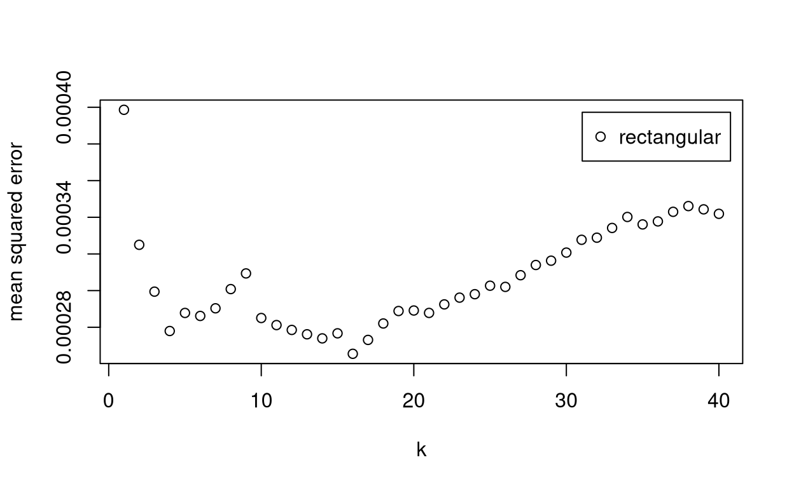
Compare prediction
We compare predictions.
predicted.response.withinsample <- kknn(response ~ regressor,
train = data.frame(regressor, response),
test = data.frame(regressor),
k = 16, kernel = "rectangular"
)boxplot(cbind(CAD - CADfit, CAD - CADfitlog, CAD - predicted.response.withinsample$fitted.values), main = "Prediction errors")